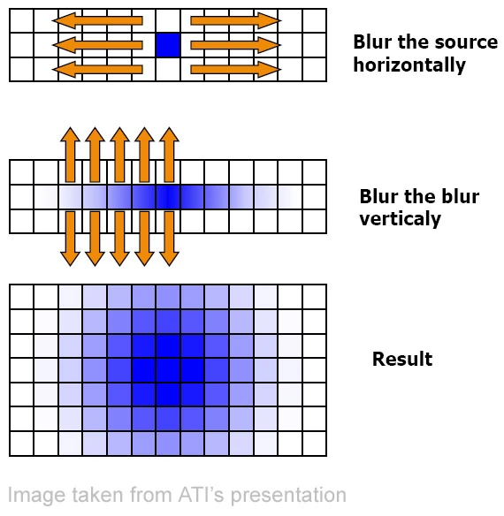

Light Bloom

Cerberus modeled by Andrew Maximov
Light Bloom (sometimes referred to as light bloom or glow) is a computer graphics effect used in video games, demos, and high dynamic range rendering (HDRR) to reproduce an imaging artifact of real-world cameras. For this, I have used down-sampled( half ) scene texture which has scene image before post-process phases for performance optimization and to get a better quality result.
To blur image, Gaussian blurring method is used at two passes with mipmaps. (The first pass is for Horizontal Blurring and, the second pass is for Vertical Blurring)

HDDR for Light Bloom Horizontal Blurring (1st blurring)


Vertical Blurring (2nd blurring) Result